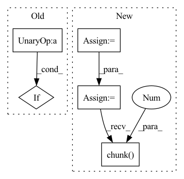

Pattern ID :234
Before Change
if is_video:
x = rearrange(x, "(b f) c h w -> b c f h w", b = b)
if not convolve_across_time :
return x
x = rearrange(x, "b c f h w -> (b h w) c f")
After Change
scale_shift = None
if exists(self.time_mlp) and exists(time_emb):
time_emb = self.time_mlp(time_emb)
time_emb = rearrange(time_emb, "b c -> b c 1 1")
scale_shift = time_emb.chunk(2 , dim = 1)
h = self.block1(x, scale_shift = scale_shift, convolve_across_time = convolve_across_time)
h = self.block2(h, convolve_across_time = convolve_across_time)In pattern: SUPERPATTERN
Frequency: 3
Non-data size: 5
Instances Fragment ID: 858940
Project Name: lucidrains/make-a-video-pytorch
Commit Name: 0af63d7db1964f26183becb09f25cd09c40ffbf5
Time: 2022-12-09
Author: lucidrains@gmail.com
File Name: make_a_video_pytorch/make_a_video.py
M Class Name: Pseudo3DConv
N Class Name: ResnetBlock
M Method Name: forward(4)
N Method Name: forward(3)
M Parent Class: nn.Module
N Parent Class: nn.Module
M File Name: make_a_video_pytorch/make_a_video.py
N File Name: make_a_video_pytorch/make_a_video.py
M Start Line: 93
M End Line: 115
N Start Line: 239
N End Line: 253
Before Change
x = self.transformer(x)
skips += [x]
if not self.use_pre_downsample :
x = self.downsample(x)
return x, skips
After Change
// Compute scale and shift from time_context
scale_shift = None
if exists(self.to_time_embedding) and exists(time_context):
time_embedding = self.to_time_embedding(time_context)
time_embedding = rearrange(time_embedding, "b c -> b c 1")
scale_shift = time_embedding.chunk(2 , dim=1)
h = self.block2(h, scale_shift=scale_shift)
return h + self.to_out(x) Fragment ID: 858936
Project Name: archinetai/audio-diffusion-pytorch
Commit Name: c6edef1c655542c2bf6a2200ecdf3b4128c01e61
Time: 2022-07-13
Author: flavio.schneider.97@gmail.com
File Name: audio_diffusion_pytorch/unet.py
M Class Name: DownsampleBlock
N Class Name: ResnetBlock1d
M Method Name: forward(3)
N Method Name: forward(3)
M Parent Class: nn.Module
N Parent Class: nn.Module
M File Name: audio_diffusion_pytorch/unet.py
N File Name: audio_diffusion_pytorch/unet.py
M Start Line: 453
M End Line: 468
N Start Line: 163
N End Line: 174
Before Change
if self.training and self.layer_dropout > 0:
to_drop = torch.empty(len(self.blocks)).uniform_(0, 1) < self.layer_dropout
blocks = [block for block, drop in zip(self.blocks, to_drop) if not drop ]
blocks = self.blocks[:1] if len(blocks) == 0 else blocks
block_args = list(map(lambda x: {"f_args": x[0], "g_args": x[1]}, block_args))After Change
self.blocks = nn.ModuleList([ReversibleBlock(f=f, g=g) for f, g in blocks])
def forward(self, x, **kwargs):
x = torch.cat([x, x], dim=-1)
blocks = self.blocks
args = route_args(self.args_route, kwargs, len(blocks))
args = list(map(lambda x: {"f_args": x[0], "g_args": x[1]}, args))
layers_and_args = list(zip(blocks, args))
if self.training and self.layer_dropout > 0:
layers_and_args = layer_drop(layers_and_args, self.layer_dropout)
blocks, args = map(lambda ind: list(map(itemgetter(ind), layers_and_args)), (0, 1))
out = _ReversibleFunction.apply(x, blocks, args)
return torch.stack(out.chunk(2 , dim=-1) ).sum(dim=0)
Fragment ID: 858932
Project Name: lucidrains/sinkhorn-transformer
Commit Name: d5b9c649e59290b15c15f85d0bb182cb20b699fb
Time: 2020-04-15
Author: lucidrains@gmail.com
File Name: sinkhorn_transformer/reversible.py
M Class Name: ReversibleSequence
N Class Name: ReversibleSequence
M Method Name: forward(2)
N Method Name: forward(2)
M Parent Class: nn.Module
N Parent Class: nn.Module
M File Name: sinkhorn_transformer/reversible.py
N File Name: sinkhorn_transformer/reversible.py
M Start Line: 133
M End Line: 142
N Start Line: 161
N End Line: 174